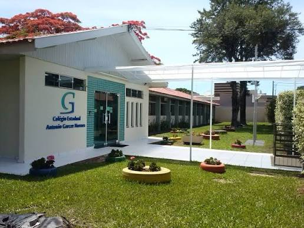

Entrada Superior

A Entrada Superior é o portal de acolhimento do Colégio Garcez. Este espaço marca o ponto de encontro diário dos estudantes, professores e visitantes, simbolizando o início da rotina escolar e o orgulho de pertencer à nossa história.